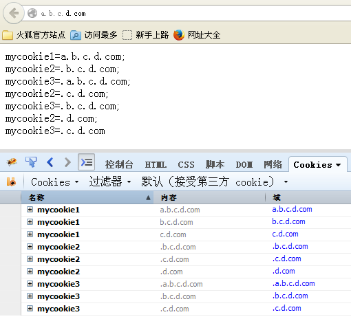
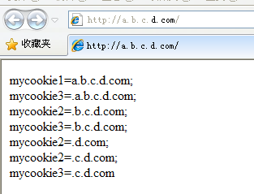

前言
cookie在各种登录，记录用户信息方面有很大用途，而在多级域名下的共享则是通过参数domain来控制。
图解共享问题
firefox下的cookie值
ie下的cookie值
由图1得知，cookie的域可以分为前面带点和不带点的，其中以点开头的域下的cookie是被共享的，而非点开头的只能是本域的cookie才能被读取，比如a.b.c.d.com只能读取a.b.c.d.com而不能读取b.c.d.com以及更上级域。
由图2得知，虽然ie和firefox的cookie共享规则一致，但是不同域下共享的cookie优先级是不一样的。
属性介绍
一个cookie如上4个重要的属性:
maxAge:cookie被客户端保持的时间,单位为(秒),正数表示在指定的秒数后过期被客户端删除,0表示删除此cookie(置空),负数则表示此cookie不会被客户端存储,将在浏览器关闭后清除.
domain:cookie可被有效操作的域,可以为ip/hostname等,不过需要声明:*.abc.com,.abc.com,abc.com这三种方式会有区别,客户端会做简单的匹配.多数情况下直接使用abc.com可以接受多级子域名.只有正确匹配domain的cookie才会被发送给server.
secure:是否只允许安全加密url访问,默认为false,如果为true,那么cookie只对https/SSL等加密连接才会发送给server.
path:cookie对domain何路径下访问有效,"/"表示domain下根目录中所有请求有效,"/open"表示只对domain/open目录下请求有效,如果此path忘记设置,你将遇到一个很尴尬的问题:明明在其他页面设置了cookie输出,但是换个页面却死活不行..